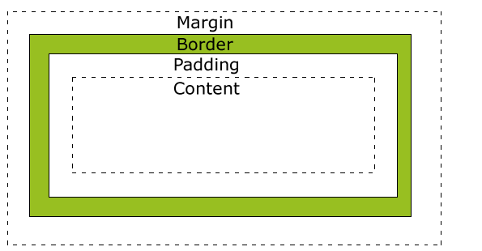

css box 学习示例

CSS 盒子模型(Box Model)
- Margin(外边距) - 清除边框外的区域，外边距是透明的。
- Border(边框) - 围绕在内边距和内容外的边框。
- Padding(内边距) - 清除内容周围的区域，内边距是透明的。
- Content(内容) - 盒子的内容，显示文本和图像。
盒子模型演示
CSS盒模型本质上是一个盒子，封装周围的HTML元素，它包括：边距，边框，填充，和实际内容。
这里是盒子内的实际内容。有 25px 内间距，25px 外间距、25px 绿色边框。